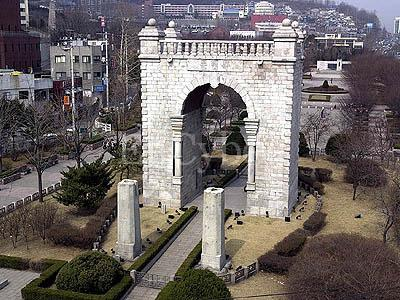
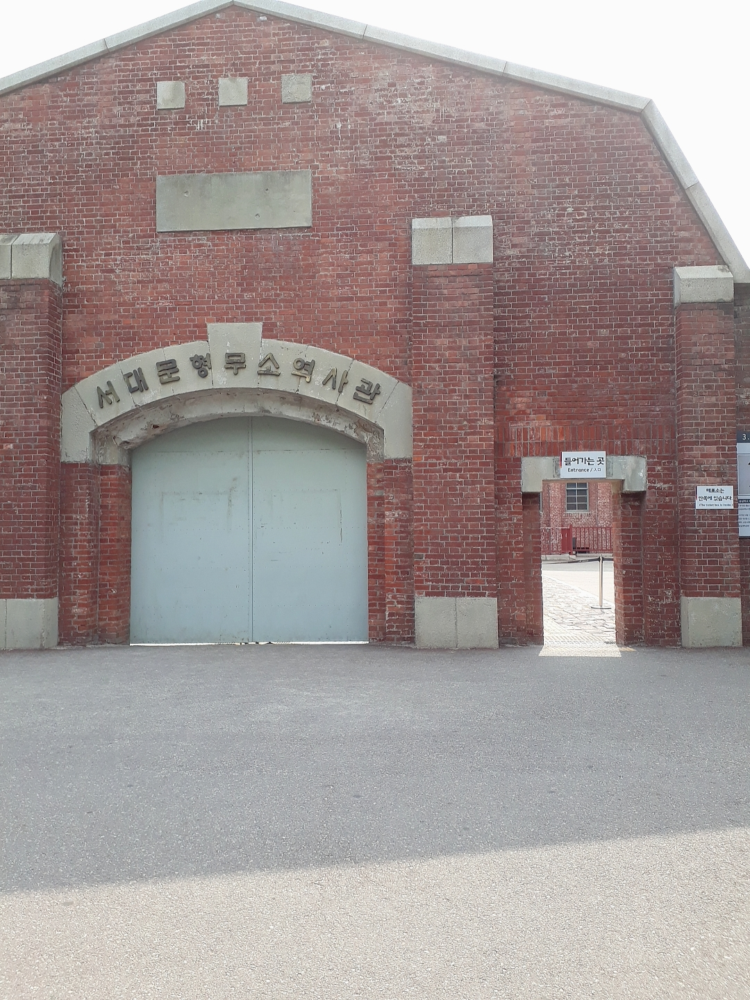
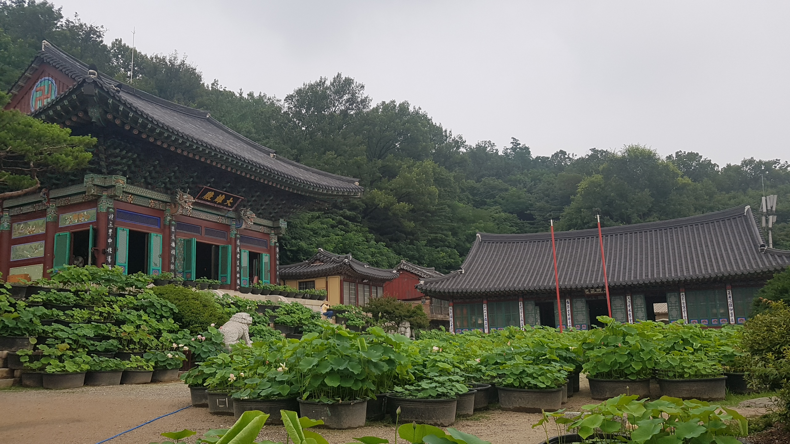
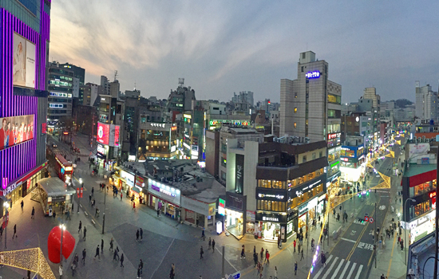
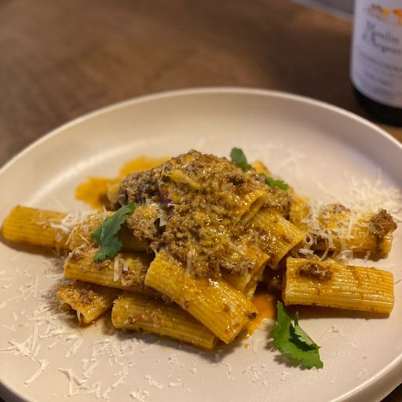
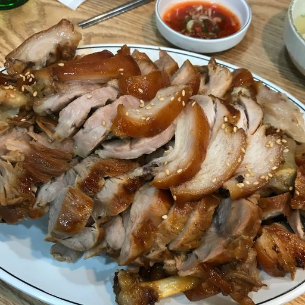

서대문구
독립문대한민국의 사적 제32호로, 조선 말에서 대한제국으로 이어지는 1896년부터 1897년에 걸쳐 완공된 기념문이다.양식은 유럽식 개선문의 모습을 하고 있으나, 문의 기능을 수행할 목적으로 만든 것이 아닌 기념비(monument)로서 만든 것이다. 청나라로부터의 자주독립을 상징으로 독립협회가 축조한 건축물이며 이후 일제강점기를 거치며 일본 제국으로부터의 독립에 대한 염원으로 그 의미가 확장되었다 평점 4.27/5 |
 |
서대문형무소역사관서대문형무소역사관은 구 서울구치소 시설을 개조하여 과거 경성감옥 · 서대문감옥을 복원한 독립운동 및 민주화운동 관련 역사관이다. 서울 구 서대문형무소라는 명칭으로 사적 제324호로 지정되어 있다. 평점 4.48/5 |
 |
봉원사서울 서대문구 봉원사길에 위치한 한국불교태고종의 절이다. 평점 - |
 |
신촌연세대학교 앞 일대에 존재하는 대형 상권 연세대 의대 종합관 건너편의 경의선 굴다리(명물거리 삼거리)를 기준으로 갈라 서쪽지역까지를 신촌으로 칭한다 홍대거리, 대학로 와 더불어 번화가를 상징하는 거리 중 하나이다 평점 - |
 |
추천맛집
다이닝후서울특별시 마포구 월드컵로10길 48 동궁빌딩 1F 추천메뉴 : 핑크불렀어 평점 4.5/5 |
 |
카돈마리서울특별시 중구 서소문로9길 28 덕수궁롯데캐슬 B112-B113호 추천메뉴 : 치즈돈까스 + 쌀국수 평점 4.3/5 |

|
서대문족발서울특별시 서대문구 충정로6안길 54 추천메뉴 : 기본 족발 평점 4.1/5 |
 |